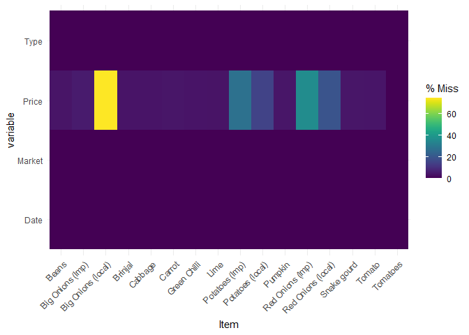
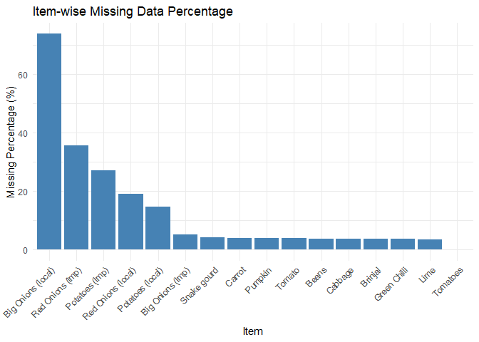

Installation
You can install the development version of vegetablesSriLanka from GitHub with:
# install.packages("pak")
pak::pak("thiyangt/vegetablesSriLanka")Load data
library(vegetablesSriLanka)
data("vegetables.srilanka")
head(vegetables.srilanka)
#> Date Item Type Market Price
#> 1 2016-08-01 Pumpkin Wholesale Pettah 70
#> 2 2016-08-01 Pumpkin Wholesale Dambulla 45
#> 3 2016-08-01 Pumpkin Retail Pettah 90
#> 4 2016-08-01 Pumpkin Retail Dambulla 70
#> 5 2016-08-01 Brinjal Wholesale Pettah 60
#> 6 2016-08-01 Brinjal Wholesale Dambulla 45Data Quality Analysis

Visualise item-wise missing percentage
vs1 <- vegetables.srilanka |>
filter(!is.na(Item))
gg_miss_fct(vs1, Item)
vs <- vegetables.srilanka |>
filter(!is.na(Item)) |>
select(Item, Price)
# Calculate item-wise missing percentage
missing_summary <- vs |>
group_by(Item) |>
summarise(
missing_pct = mean(!complete.cases(across())) * 100
)
#> Warning: There was 1 warning in `summarise()`.
#> ℹ In argument: `missing_pct = mean(!complete.cases(across())) * 100`.
#> ℹ In group 1: `Item = "Beans"`.
#> Caused by warning:
#> ! Using `across()` without supplying `.cols` was deprecated in dplyr 1.1.0.
#> ℹ Please supply `.cols` instead.
ggplot(missing_summary, aes(x = reorder(Item, -missing_pct), y = missing_pct)) +
geom_bar(stat = "identity", fill = "steelblue") +
labs(
title = "Item-wise Missing Data Percentage",
x = "Item",
y = "Missing Percentage (%)"
) +
theme_minimal() +
theme(axis.text.x = element_text(angle = 45, hjust = 1))